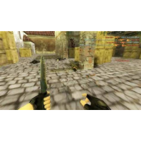
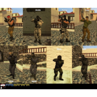

Counter-Strike 1.6 traces its roots back to a mod of the original Half-Life game called "Half-Life: Counter-Strike." This mod was created by Minh "Gooseman" Le and Jess "Cliffe" Cliffe, and it quickly gained popularity among players for its addictive gameplay and tactical team-based action.
The game pits two teams—the Counter-Terrorists and Terrorists—against each other in objective-based game modes. The most common objectives are bomb defusal and hostage rescue, each played on designated maps. Players begin with a knife and pistol, and they can purchase more advanced weapons and equipment with money earned through eliminating enemies or accomplishing goals. Once eliminated, players do not respawn until the end of the round
⭐ Core Gameplay
CS 1.6 is a team-based tactical shooter where two sides compete:
Terrorists (T)
Counter-Terrorists (CT)
Each round, players earn money based on performance and use it to buy weapons and equipment. The game emphasizes:
Fast but highly skill-based shooting
Tight movement mechanics (strafe-jumping, bunny hopping, crouch-spraying)
Team coordination and map control
Classic “one-life per round” tension

🎯 Common Game Modes
Bomb Defusal (de_ maps) – Terrorists plant the bomb; CTs must stop them.
Strong LAN and online multiplayer culture—Internet cafés, clan wars, and early tournaments.
Massive modding and mapping community: maps like de_dust2, de_inferno, cs_assault, and aim_ak_colt became legends.

🎮 Legacy
Counter-Strike 1.6 is widely regarded as:
A founding pillar of competitive FPS esports.
One of the most played PC games in the 2000s.
Still alive today through community servers, tournaments, and mods.
It laid the foundation for later titles like CS: Source, CS: Global Offensive, and CS 2, but maintains a loyal fanbase thanks to its simplicity, precision, and nostalgia.
If you'd like, I can also describe: